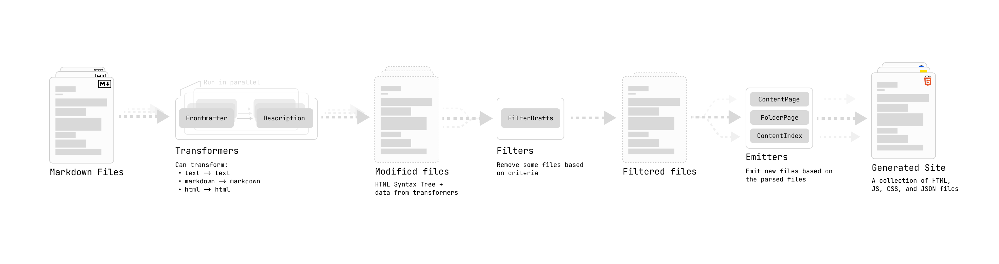

Quartz is meant to be extremely configurable, even if you don’t know any coding. Most of the configuration you should need can be done by just editing quartz.config.ts or changing the layout in quartz.layout.ts.
Tip
If you edit Quartz configuration using a text-editor that has TypeScript language support like VSCode, it will warn you when you you’ve made an error in your configuration, helping you avoid configuration mistakes!
The configuration of Quartz can be broken down into two main parts:
const config: QuartzConfig = {
configuration: { ... },
plugins: { ... },
}General Configuration
This part of the configuration concerns anything that can affect the whole site. The following is a list breaking down all the things you can configure:
pageTitle: title of the site. This is also used when generating the RSS Feed for your site.pageTitleSuffix: a string added to the end of the page title. This only applies to the browser tab title, not the title shown at the top of the page.enableSPA: whether to enable SPA Routing on your site.enablePopovers: whether to enable popover previews on your site.analytics: what to use for analytics on your site. Values can benull: don’t use analytics;{ provider: 'google', tagId: '<your-google-tag>' }: use Google Analytics;{ provider: 'plausible' }(managed) or{ provider: 'plausible', host: '<your-plausible-host>' }(self-hosted): use Plausible;{ provider: 'umami', host: '<your-umami-host>', websiteId: '<your-umami-website-id>' }: use Umami;{ provider: 'goatcounter', websiteId: 'my-goatcounter-id' }(managed) or{ provider: 'goatcounter', websiteId: 'my-goatcounter-id', host: 'my-goatcounter-domain.com', scriptSrc: 'https://my-url.to/counter.js' }(self-hosted) use GoatCounter;{ provider: 'posthog', apiKey: '<your-posthog-project-apiKey>', host: '<your-posthog-host>' }: use Posthog;{ provider: 'tinylytics', siteId: '<your-site-id>' }: use Tinylytics;{ provider: 'cabin' }or{ provider: 'cabin', host: 'https://cabin.example.com' }(custom domain): use Cabin;{provider: 'clarity', projectId: '<your-clarity-id-code' }: use Microsoft clarity. The project id can be found on top of the overview page.
locale: used for i18n and date formattingbaseUrl: this is used for sitemaps and RSS feeds that require an absolute URL to know where the canonical ‘home’ of your site lives. This is normally the deployed URL of your site (e.g.quartz.jzhao.xyzfor this site). Do not include the protocol (i.e.https://) or any leading or trailing slashes.- This should also include the subpath if you are hosting on GitHub pages without a custom domain. For example, if my repository is
jackyzha0/quartz, GitHub pages would deploy tohttps://jackyzha0.github.io/quartzand thebaseUrlwould bejackyzha0.github.io/quartz. - Note that Quartz 4 will avoid using this as much as possible and use relative URLs whenever it can to make sure your site works no matter where you end up actually deploying it.
- This should also include the subpath if you are hosting on GitHub pages without a custom domain. For example, if my repository is
ignorePatterns: a list of glob patterns that Quartz should ignore and not search through when looking for files inside thecontentfolder. See private pages for more details.defaultDateType: whether to use created, modified, or published as the default date to display on pages and page listings.theme: configure how the site looks.cdnCaching: Iftrue(default), use Google CDN to cache the fonts. This will generally will be faster. Disable (false) this if you want Quartz to download the fonts to be self-contained.typography: what fonts to use. Any font available on Google Fonts works here.header: Font to use for headerscode: Font for inline and block quotes.body: Font for everything
colors: controls the theming of the site.light: page backgroundlightgray: bordersgray: graph links, heavier bordersdarkgray: body textdark: header text and iconssecondary: link colour, current graph nodetertiary: hover states and visited graph nodeshighlight: internal link background, highlighted text, highlighted lines of codetextHighlight: markdown highlighted text background
Plugins
You can think of Quartz plugins as a series of transformations over content.

plugins: {
transformers: [...],
filters: [...],
emitters: [...],
}- Transformers map over content (e.g. parsing frontmatter, generating a description)
- Filters filter content (e.g. filtering out drafts)
- Emitters reduce over content (e.g. creating an RSS feed or pages that list all files with a specific tag)
You can customize the behaviour of Quartz by adding, removing and reordering plugins in the transformers, filters and emitters fields.
Note
Each node is modified by every transformer in order. Some transformers are position sensitive, so you may need to pay particular attention to whether they need to come before or after certain other plugins.
You should take care to add the plugin to the right entry corresponding to its plugin type. For example, to add the ExplicitPublish plugin (a Filter), you would add the following line:
filters: [
...
Plugin.ExplicitPublish(),
...
],To remove a plugin, you should remove all occurrences of it in the quartz.config.ts.
To customize plugins further, some plugins may also have their own configuration settings that you can pass in. If you do not pass in a configuration, the plugin will use its default settings.
For example, the Latex plugin allows you to pass in a field specifying the renderEngine to choose between Katex and MathJax.
transformers: [
Plugin.FrontMatter(), // use default options
Plugin.Latex({ renderEngine: "katex" }), // set some custom options
]Some plugins are included by default in the quartz.config.ts, but there are more available.
You can see a list of all plugins and their configuration options here.
If you’d like to make your own plugins, see the making custom plugins guide.